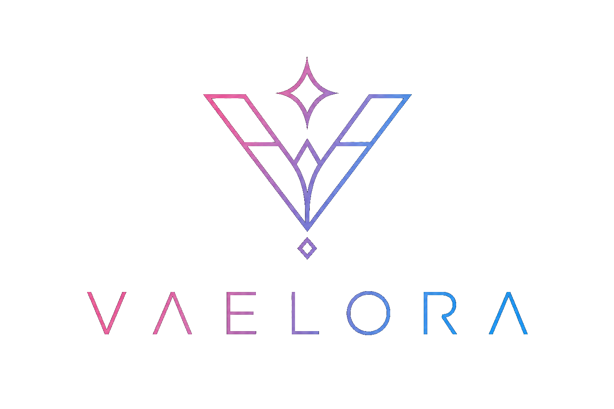

Æther Forge
A fully local AI assistant that listens, reasons, executes, and evolves. Powered by local language models with voice interaction, autonomous tool creation, and a self-growing capability system tracked through Git.
View project
Inference · Personality · Software
Vaelora is one person, multiple projects, and no shortcuts.
Products
A fully local AI assistant that listens, reasons, executes, and evolves. Powered by local language models with voice interaction, autonomous tool creation, and a self-growing capability system tracked through Git.
View projectA custom LLM inference engine written from scratch in Rust. Handles tokenization, quantized model loading, and WebSocket streaming — purpose-built to run a fine-tuned model on constrained hardware.
View projectA Discord bot with a tsundere persona baked into the model weights — not a system prompt. Personality via LoRA fine-tuning on a custom synthetic dataset, served live by SeraphByte.
View projectLive Demo
Served live by SeraphByte. Limited to 3 interactions to keep the server happy.
About
Vaelora is an independent software research and development lab dedicated to stripping away the bloat of modern AI. Our core infrastructure, SeraphByte, started with a fundamental engineering challenge: building a high-efficiency inference engine entirely from scratch. The result is a lean, highly optimized framework built to bypass the black-box limitations of traditional tooling.
Seraphine serves as live proof of this architecture—a highly interactive Discord agent designed to operate directly on constrained hardware. By baking her distinct persona directly into the model weights rather than relying on runtime system prompts, we achieve unparalleled execution speed and native behavior.
Self-hosted end to end. Engineered to run locally on consumer-grade hardware like a GTX 1050 Ti. Zero cloud dependencies, zero vendor lock-in.
Built from the ground up. Complete ownership of our stack. The tokenizer, the inference engine, and the fine-tuning pipeline are all custom-engineered.
Transparent engineering. Built in public. Our entire development process is streamed live, fostering true community-driven innovation.
Contact
We take on a small number of projects each year. If the work sounds like a fit, say hello.